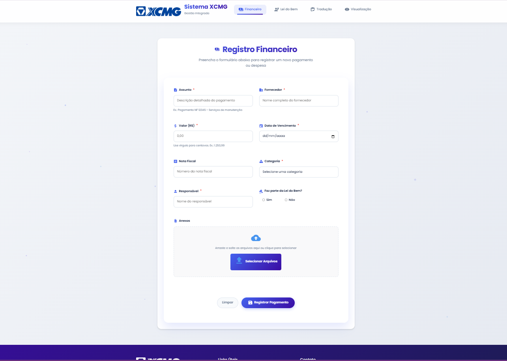
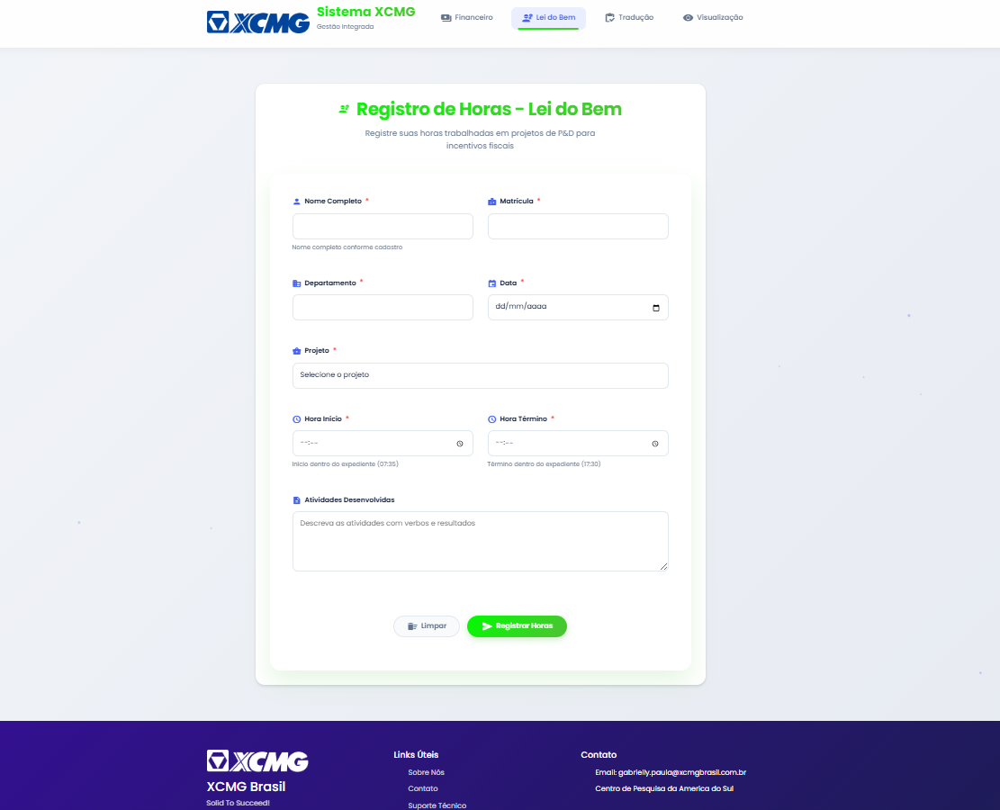
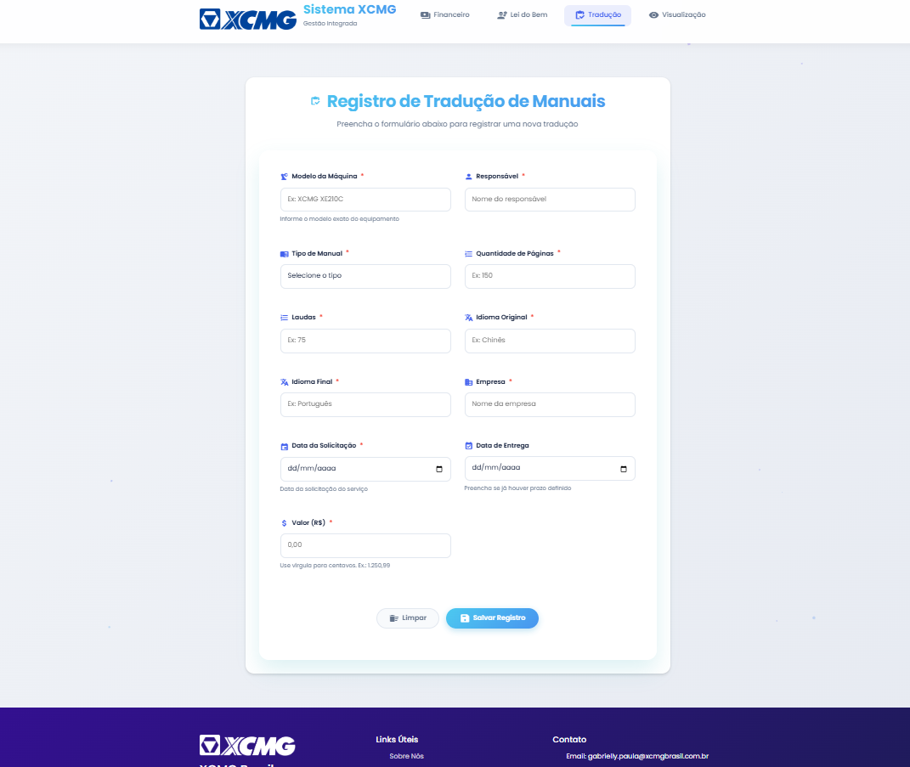
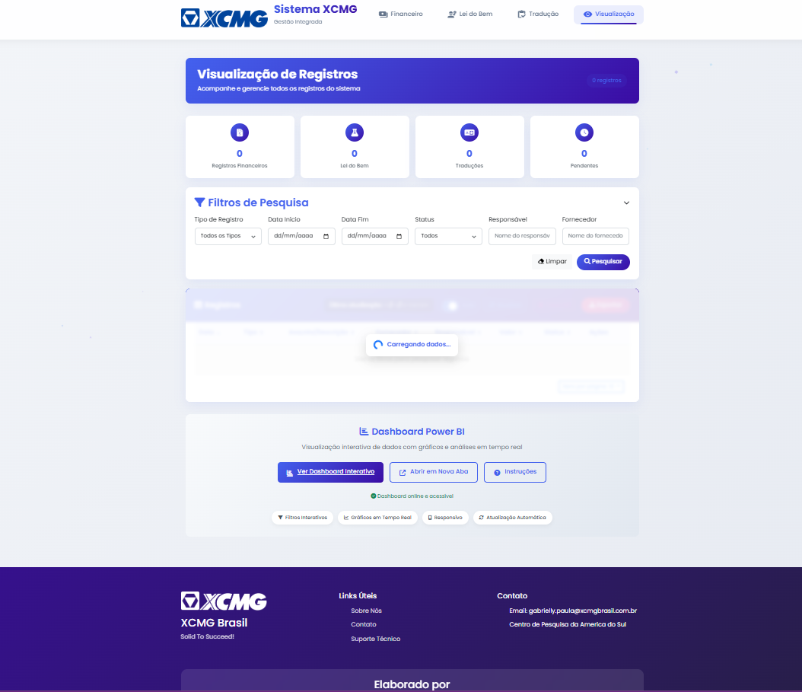
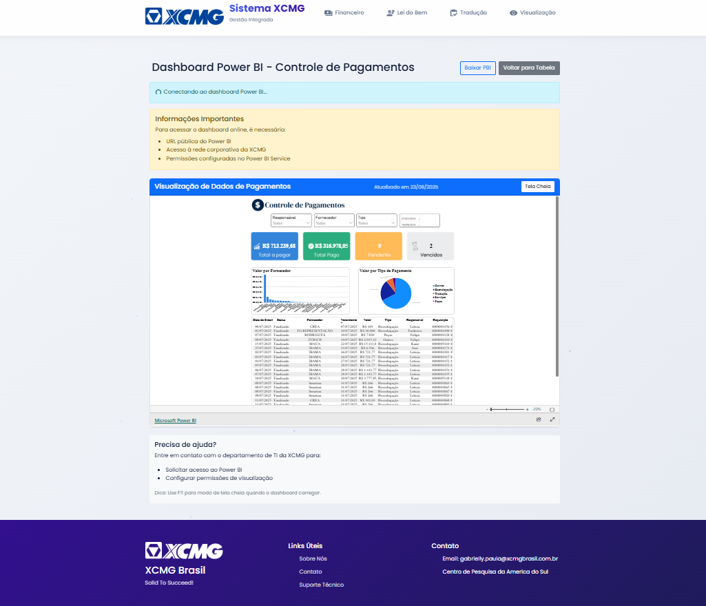

Sistema de Gestão Integrada XCMG
Aplicação web integrada para gerenciar processos internos — controle financeiro, horas da Lei do Bem, traduções técnicas e visualização de dados — em uma única interface.

- Tipo
- Profissional · Sistema web
- Papel
- Desenvolvimento full stack
- Backend
- Python · Flask
- Integrações
- Google Sheets · Power BI
Contexto e solução
O Sistema XCMG foi construído para centralizar processos empresariais da XCMG Brasil, com foco em eficiência, usabilidade e integração com serviços externos como Google Sheets e envio de e-mails.
No frontend, criei interfaces intuitivas e responsivas com HTML5, CSS3 e JavaScript puro. O backend foi implementado em Python com Flask, incluindo cache, logging e integração com as APIs do Google.
O sistema otimiza fluxos como registro de pagamentos, cálculo de horas e acompanhamento de traduções, promovendo mais produtividade e conformidade fiscal.
Tecnologias utilizadas
Módulos do sistema
Financeiro
Registro de pagamentos e despesas, anexos de arquivos (PDF e imagens) e integração com a Lei do Bem.
Lei do Bem
Registro de horas em projetos de P&D, com cálculo automático de horas e validação de campos.
Traduções
Gestão de traduções de manuais técnicos, incluindo idiomas, páginas, laudas e valores.
Visualização
Filtros avançados, tabela dinâmica, exportação de dados e dashboard Power BI integrado.
Recursos gerais
E-mails automáticos, cache para performance, validação de formulários e upload de arquivos.
APIs de suporte
Endpoints para teste, verificação de colunas e consulta de registros recentes.
Interface do sistema
Clique em uma tela para abrir em tamanho real.





Aprendizados
Projeto desenvolvido para a XCMG Brasil, com foco em soluções reais para desafios empresariais. Nele aprofundei integração de APIs, otimização de performance e design de interfaces.